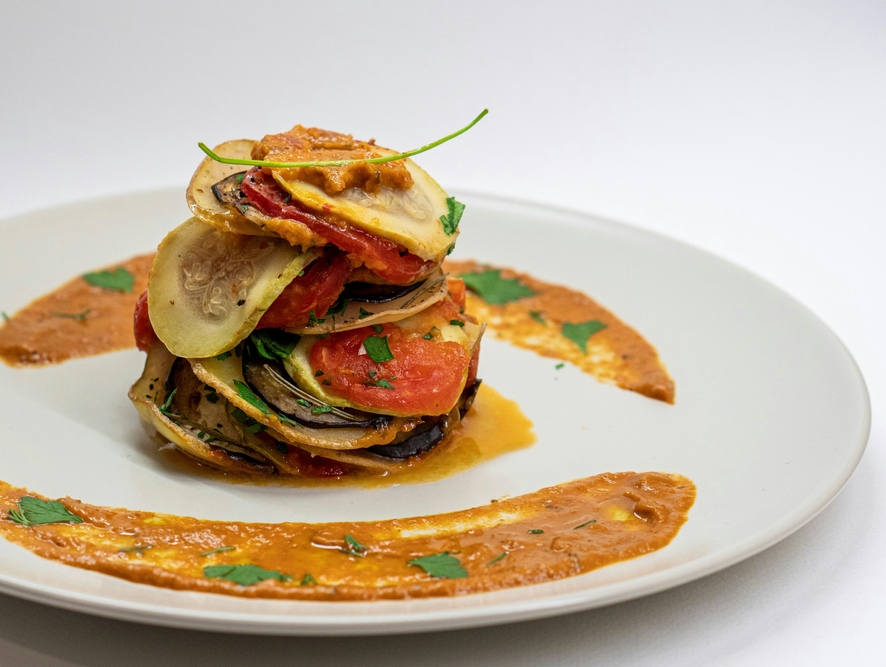

Ratatouille

Description
This easy ratatouille recipe is one of the best ways to enjoy summer’s
finest veggies. Baked layers of tender eggplant, squash, and tomato
brushed with a delicate herb oil sit atop a rich, tangy tomato sauce, just
like the French do it. Sounds pretty dreamy, right? Head to the farmers
market and get started!
Ingredients
Tomato Sauce
- 2 tablespoons olive oil
- 1 medium yellow onion
- 4 cloves minced garlic
- 1 diced red bell pepper
- 1 tablespoon tomato paste
- 1.5 cups marinara sauce
- 1 teaspoon dried thyme
- 1/2 teaspoon dried rosemary crushed
- 1/2 teaspoon fine sea salt or to taste
- 1/4 teaspoon freshly ground black pepper
Vegetables
- 1 small eggplant
- 2 medium zucchini
- 2 medium yellow squash
- 3 Roma tomatoes
Herb Oil
- 2 tablespoons olive oil
- 1 tablespoon fresh parsley
- 1 teaspoon fresh thyme leaves
- 1 clove garlic
- Freshly ground black pepper to taste
Steps
Prepare the sauce
- Preheat the oven to 375°F (190°C).
-
Heat the olive oil in a large skillet over medium heat. Add the diced
onion and cook for 5 to 6 minutes, stirring occasionally, until softened
and translucent.
-
Add the minced garlic and diced red bell pepper. Cook for another 4 to 5
minutes, stirring occasionally, until the bell pepper begins to soften
and the garlic is fragrant.
-
Add the tomato paste and cook for about 1 minute, stirring constantly to
distribute it evenly through the vegetables.
-
Pour in the marinara sauce and add the dried thyme, oregano, rosemary,
salt, and black pepper. Stir well and bring the sauce to a gentle
simmer. Cook for 8 to 10 minutes, stirring occasionally, until slightly
thickened.
-
Spread the tomato sauce evenly over the bottom of a 9-inch
(23-centimeter) round baking dish or a similar-sized oval baking dish.
Arrange the veggies
-
Slice the eggplant, zucchini, yellow squash, and Roma tomatoes into
approximately 1/8-inch (3ml) thick rounds. Keeping the slices close to
the same thickness will help them cook evenly.
-
Arrange the sliced vegetables over the tomato sauce, alternating between
eggplant, zucchini, yellow squash, and tomato. Slightly overlap each
slice with the next and continue arranging them in concentric circles or
rows until the baking dish is filled.
Prepare the herb oil
-
In a small bowl, combine the olive oil, parsley, thyme, grated garlic,
salt, and black pepper. Stir until evenly combined.
-
Brush or drizzle the herb oil evenly over the arranged vegetables,
making sure some of the mixture reaches between the overlapping slices.
Bake
-
Cover the baking dish tightly with aluminium foil and bake for 30
minutes. The foil traps steam and helps the vegetables soften without
drying out.
-
Carefully remove the foil and continue baking uncovered for another 20
to 30 minutes. The ratatouille is ready when the vegetables are
completely tender when pierced with a small knife or fork and the edges
are beginning to brown lightly.
-
For additional browning, broil uncovered for 2 to 3 minutes at the end,
watching closely so the vegetables do not burn.
-
Remove from the oven and let the ratatouille rest for about 10 minutes
before serving. This allows the vegetables to settle slightly and the
flavours to come together.